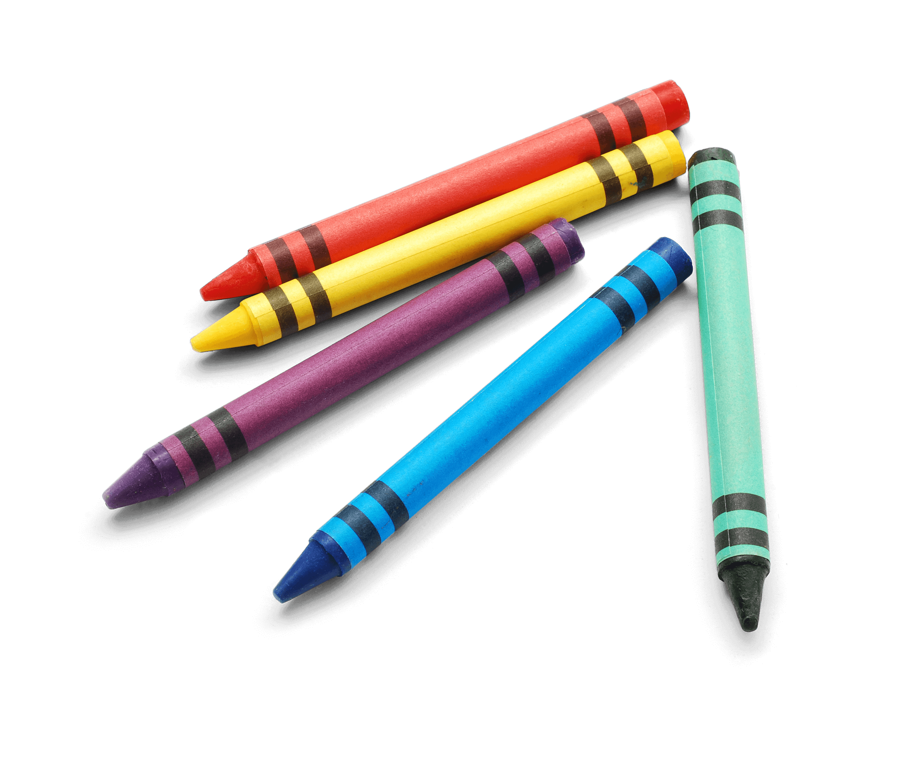
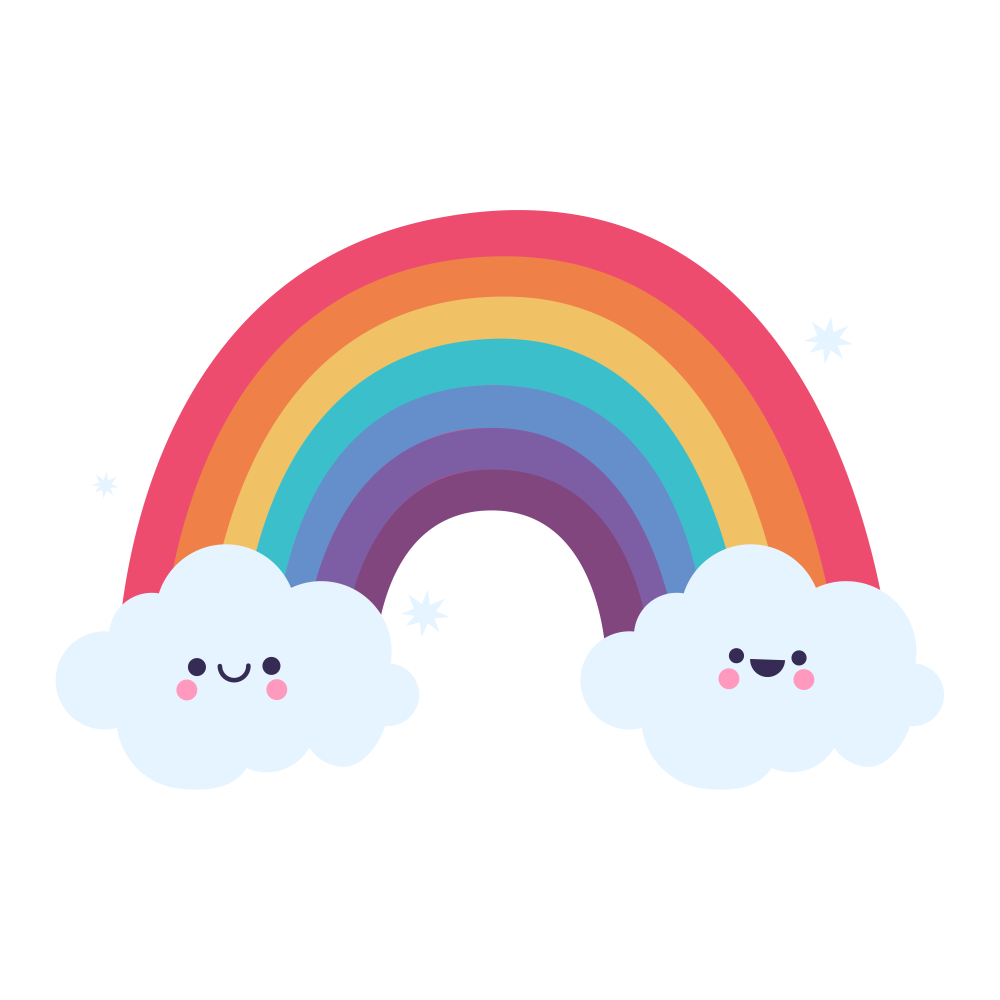

Actividades Escolares
Uniforme
Pintor con detalles cuadrillé blanco con azul para los varones, rosa para las nenas y el distintivo del colegio.
En Invierno:
- – Remera gris con distintivo del colegio.
- – Campera bordo con el distintivo del colegio.
- – Cualquier zapatilla (no se exigen)
En Verano:
- – Bermuda gris.
- – Remera blanca o gris con el distintivo del colegio.
- – Cualquier zapatilla (no se exigen)
Mochila de tela con detalles cuadrillé blanco con azul para los varones y rosa para las nenas. En su interior debe contener lo siguiente:
- 1
Plato y Vaso de plástico.
- 2
Taper para la merienda.
- 3
Mantel y servilleta.
- 4
Toalla.
Todas las prendas y los elementos de la mochila deben tener el nombre del/la alumno/a bordado en LETRA MAYÚSCULA DE IMPRENTA.

Galería de los peques
"Momentos inolvidables de nuestros pequeños."